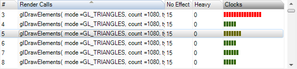
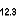

The call trace window of the Scrubber GL lists the OpenGLES render calls (glDraw* and glClear) made by the connected application during the captured frame, along with per-rendercall performance metrics.

Basic usage:
• Capture a frame from the connected application, after having enabled any per-rendercall metrics you wish to view. After the capture completes, each column will populate with information drawn from the frame:
- Column '#': the chronological ID of the render call
- Column 'Render Calls': the API call made by the application
- Column 'No Effect': the number of API calls made prior to the selected render call that Adreno Profiler considers redundant or irrelevant; for instance, if two calls to glViewport are made with the same parameters prior to a draw call, one of them is redundant
- Column 'Heavy': the number of API calls made prior to the selected render call that Adreno Profiler considers heavyweight, such as glBuffer[Sub]Data, glFinish, and so on
- ...additional columns will contain metrics data, if any metrics were enabled when capturing
• Click on a render call to scrub the emulator view to that API call.
• Click on a column header to sort the list according to the data in that column.
• Clicking on a column containing per-rendercall metrics will cause the scene to be colorized according to the data collected for that metric. Meshes with the highest values for the selected metric will be red, whereas low value meshes will be green. Viewing the scene this way allows one to quickly identify the more expensive rendercalls in the scene.
- To view the scene normally, click on any non-metrics column.
• When a render call is selected, a few of the tabs to the right of the rendercall list will update:
- The API Calls tab will display all of the state changes and other API calls made just prior to the render call.
- The GL Context tab will update to show the OpenGLES context state at the time of that call.
Toolbar options:
Chooses how to view captured Scrubber metrics.
Note that if you click on a column in the call trace that contains metrics data, the scene in the emulator view will be shaded according to the selected metric. See the tutorial How To Capture Per-Rendercall Metrics for more information.
[] View metrics as numerical data
[] View metrics as bar graph
Seek through the captured call trace.
• Several preset queries are provided in the dropdown list; select one then seek forwards or backwards with the adjacent buttons.
• A custom search may be entered. Custom searches are implemented as a substring match against the text displayed for render and state API calls.
Toggle the call trace view's splitter orientation between horizontal and vertical.